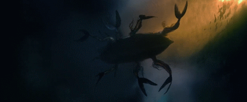

Det var en gång pirater som skulle ut på havet för att plundra andra skepp. De seglade länge ute på havet för att leta upp det perfekta bytet. Tiden gick och det började mörkna ute på havet och det hade fortfarande inte hittat ett skepp att plundra. Det hade inte heller någon mat kvar så det var tvugna att ta sig iland mitt i natten för att leta reda på mat.
Det tog en liten eka så det kunde komma in till land men påvägen dit så hörde det en svag röst som sjöng en sång. Piraterna kollade runt sig men såg ingenting och det fortsatte att ro in till land. Efter en liten stund till så hördes samma sjungande röst igen fast starkare.
En av piraterna kollade längst kanten på ekan ner i det bäcksvarta vattnet och där såg han ett svagt skimrande ljus som kom närmare honom. Han började se ett ansikte som föreställde en kvinna och han hade inte sett något vackrare, med ett ljust långt hår och en ton av rött kom hon upp ovanför vattenytan och sjöng för han. Piraten blev helt tagen av hennes utstrålning och vackra stämma.
Det andra piraterna såg sjöjungfrun och hade bara hört sagor om de vackra havsvarelserna. Nu försökte den vackra sjöjungfrun hänföra den ovetande piraten ner i det bäcksvarta vattnet med henne för att sedan äta honom. När piraten var påväg ner i det svarta mörka vattnet så hördes ett bang! Då var det en av piraterna som slog sjöjungfrun i huvudet med åran och det skyndade sig snabbt in till land för att komma i säkerhet.
